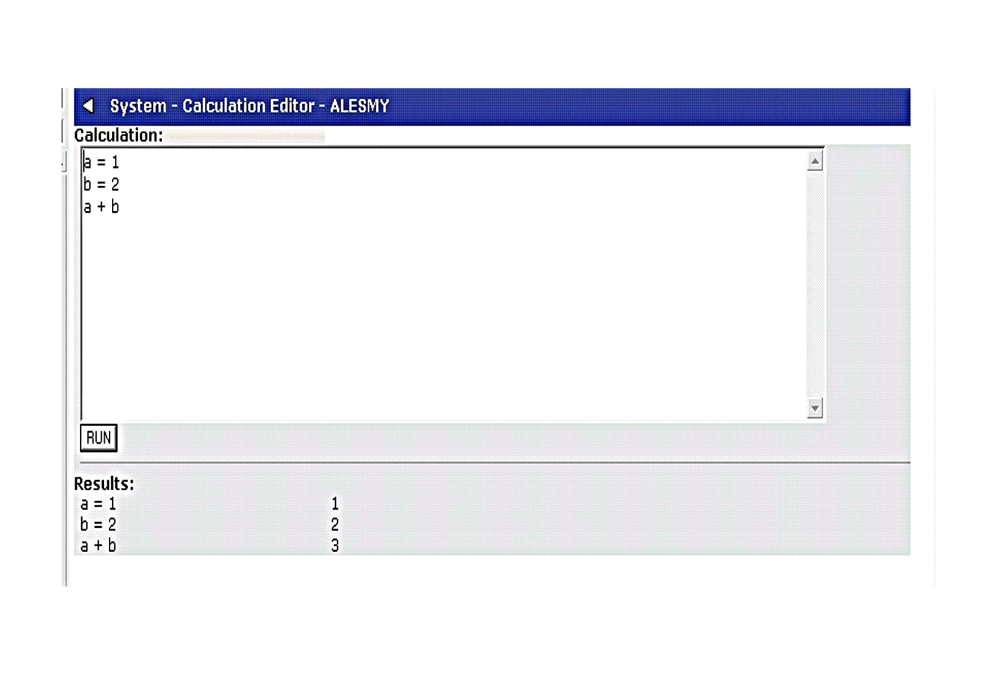

Calculation Editor
The Calculation Editor allows you to try out calculations using the business logic calculation methods (see accompanying documentation). This function can be useful to test calculations before being used in reports and .

Simply enter in the calculations using the appropriate syntax and click run to test the results.